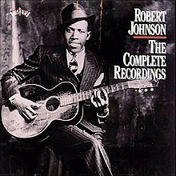

The Complete Recordings is a compilation album by American Delta blues musician Robert Johnson. The 41 songs were recorded in two sessions in Dallas and San Antonio, Texas for the American Record Company (ARC) during 1936 and 1937. Most were first released on 78 rpm records in 1937. The Complete Recordings, released August 28, 1990, by Columbia Records, contains every recording Johnson is known to have made, with the exception of an alternate take of "Travelling Riverside Blues".
The Complete Recordings peaked at number 80 on the Billboard 200 chart. The album sold more than a million copies,and won a Grammy Award in 1991 for "Best Historical Album." In 1992, the Blues Foundation inducted the album into the Blues Hall of Fame. It also was included by the National Recording Preservation Board in the Library of Congress' National Recording Registry in 2003. Eric Clapton and Keith Richards contributed to the album liner notes with essays on Johnson's influence on their music.
(from Wikipedia)